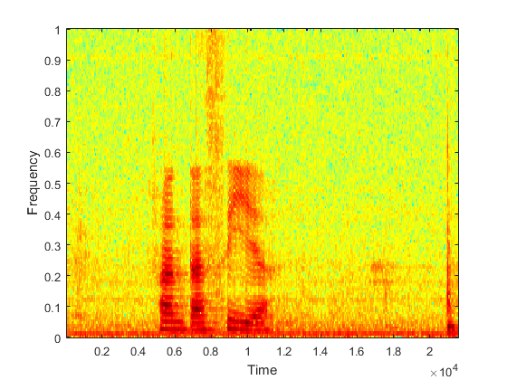
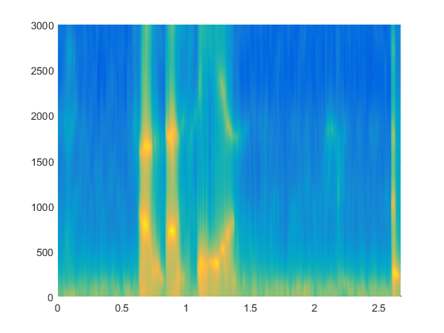
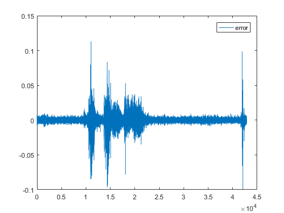
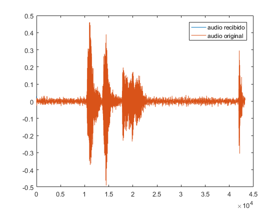
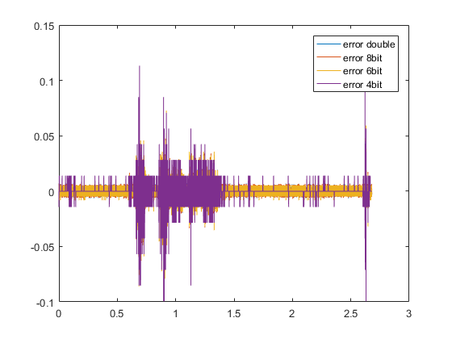
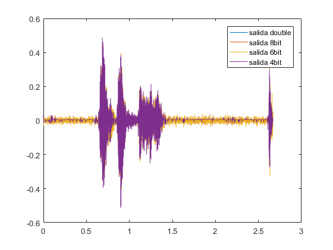

Contents
close all
clear
AUDIO
[audio, Fs] = audioread('fantasia.wav');
CONSTANTES
ventana = 25e-3;
paso = 10e-3;
ancho = ventana * Fs;
M = 20;
inicios = 1:paso*Fs:length(audio)-ancho;
error = [];
zf = zeros(M-1,1);
for x = 1:length(inicios)
S = audio(inicios(x):inicios(x)+ancho-1);
S_estimado
autocorrelacion = xcorr(S);
rho = autocorrelacion(ancho:ancho+M-1);
subindices = toeplitz(1:M-1);
R = rho(subindices);
B= R\rho(2:M);
coeficientes(:,x) = B;
S_estimado = filter([0; B],1 ,S);
FFT
G = sqrt( rho(1) - B' * rho(2:end));
fft_S = abs(fft(S));
fft_S_estimado_actual = log10(abs(freqz(G,[1;-B], ancho, 'whole')));
fft_S_estimado(:,x) = fft_S_estimado_actual(1:ancho/2);
ERROR
[error_actual, zf] = filter([-1;B], 1, S(1:paso*Fs), zf);
error = [error error_actual(1:paso*Fs)'];
end
figure
specgram(audio)
t = (inicios-1)/Fs;
f = 0:Fs/ancho:Fs - Fs/ancho;
figure
surf(t,f(1:ancho/2),fft_S_estimado)
shading interp
set(gca,'xlim',[0 t(end)+paso], 'ylim', [0 3000]);
view(2)
figure
plot(error)
legend('error')
S_recibida = codificar(error, coeficientes, Fs*paso, zf);
figure
plot(S_recibida)
hold on
plot(audio)
legend('audio recibido','audio original')
   
CON ERROR DE PUNTO FIJO 8bit
error_8bit = redondear(error, 8);
S_recibida_8bit = codificar(error_8bit, coeficientes, Fs*paso, zf);
CON ERROR DE PUNTO FIJO 6bit
error_6bit = redondear(error, 6);
S_recibida_6bit = codificar(error_6bit, coeficientes, Fs*paso, zf);
CON ERROR DE PUNTO FIJO 4bit
error_4bit = redondear(error, 4);
S_recibida_4bit = codificar(error_4bit, coeficientes, Fs*paso, zf);
t_error = 0:1/Fs:(length(error)-1)/Fs;
figure
plot(t_error,error)
hold on
plot(t_error,error_8bit)
hold on
plot(t_error,error_6bit)
hold on
plot(t_error,error_4bit)
legend('error double', 'error 8bit', 'error 6bit', 'error 4bit');
t_salida = 0:1/Fs:(length(S_recibida)-1)/Fs;
figure
plot(t_salida, S_recibida)
hold on
plot(t_salida,S_recibida_8bit)
hold on
plot(t_salida,S_recibida_6bit)
hold on
plot(t_salida,S_recibida_4bit)
legend('salida double', 'salida 8bit', 'salida 6bit', 'salida 4bit');
sound([audio' S_recibida S_recibida_8bit S_recibida_6bit S_recibida_4bit], Fs);
 